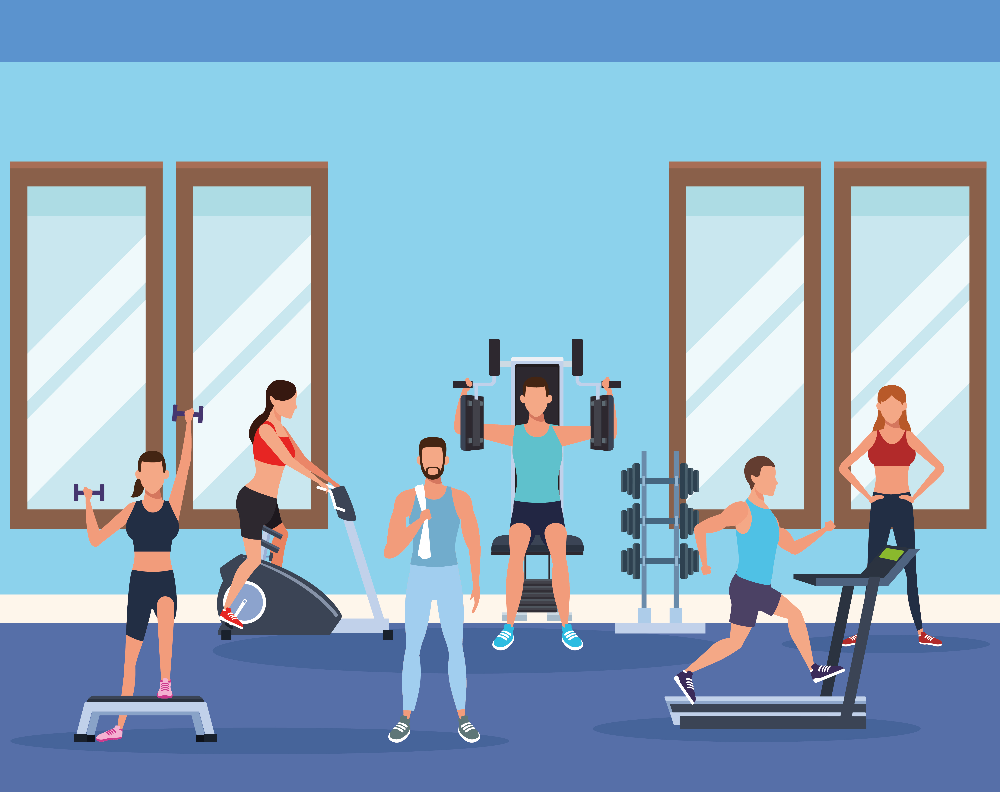

Physical Activity

What is Physical Activity?
Physical Activity is described as boidly movement due to skeletal muscles contracting which results to energy expenditure, according to Britannica . This can be in the form of walking, running, bicycling, work related activities, such as lifting, househould activities, like cleaning, and leisure activities, such as gardening and playing sports[3].
Benefits of Physical Activity
According to the NHS, doing exercise regularly can lower the risk of the following:
- Coronary heart
disease and stroke
- Type 2 diabetes
- Bowel cancer
- Breast Cancer
- Early Death
- Osteoathritis
- Hip Fracture
- Falls (particularly older alduts)
- Depression
- Dementia and Alzheimer's
disease
As well as this, reseach shows that by doing physical activity, it can boost self-esteem, mood, sleep quality, energy and reduce risk of stress. However, it is important to note that for any physical activity to benefit your health, you will need to move quick enough to have a faster heart rate, breathe faster and feel warmer.[4]